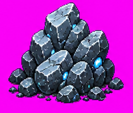
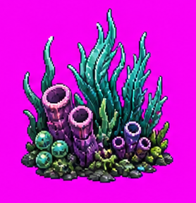
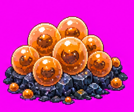
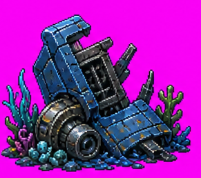
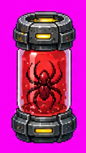

David the Helldiver 游戏设计文档
一、游戏概述
游戏定位
《David the Helldiver》是一款融合《潜水员戴夫》游戏风格和资源探索玩法，以及《绝地潜兵2》世界观与战斗要素的横版 2D 像素风格水下动作采集类游戏。
游戏背景
玩家将扮演超级地球远征军中一名因故远离前线名为 David 的绝地潜兵，被投放至一处偏远的行星科研站，负责领导守备部队并保卫科研人员。
该科研站发现，当地海域中出现了大量 710 物质和疑似变异进化的水生终结族群落，并且近期该星球及科研站还受到了光能族罕见地频繁进攻。
为了调查这些异常现象，玩家奉命在白天探索海域深处，搜集生物样品和资源，晚上则负责指挥科研站抵御光能族的进攻。
核心玩法
- 白天：单人水下探索，战斗收集资源，推进科研站升级
- 夜晚：轻度塔防模式，指挥阵地防御，抵御光能族多批次进攻
- 战备呼叫系统：分为白天（个人武器）和夜晚（塔防武器）两部分
- 叙事：随探索深入和时间推进，逐步揭开事件背后的真相
设计目标
目标人群：喜爱战斗 + 资源采集升级，但想要更具挑战性的探索与战斗过程的玩家。
结合《潜水员戴夫》优秀的资源升级系统，以及《绝地潜兵2》丰富的战斗系统和怪物设计思路，为玩家带来更加爽快的体验。
注：该项目本身为验证、展示游戏策划方案的 Demo；部分要素引用其他游戏仅为个人喜好，不代表实际商用授权。
二、玩法设计
2.1 单局流程
循环模式：白天探索 → 返回科研站升级 → 夜晚防御 → 推进剧情
未完成也可撤离，但无法获得关键奖励和推进剧情。
2.2 核心场景设计
科研站
玩家进行战斗准备和装备升级的场所，也是任务剧情主要发生以及串联两个战斗玩法的核心场景。
白天 — 单人水下战斗

玩家投入海洋战斗，搜集样本和资源，完成任务后撤离。需管理：氧气（左上角）+ 生命值 + 体力 + 武器弹药（左下角）+ 战备冷却（右上角）+ 背包重量等，选择战斗和探索的时机。
夜晚 — 轻塔防战斗

- 左侧为光能族进攻敌人，右侧为玩家防守阵地
- 玩家可通过战备呼叫（右上角）武器攻击敌人
- 鼠标选择哨戒炮等阵地武器的落点
- 阵地上有自动攻击的 SEAF 友方部队
- 敌人分多批次进攻，批次越靠后数量越多
- 战斗胜利推进剧情并获得奖励，失败将给白天探索带来 debuff
三、系统设计
3.1 角色系统
基本操作
- WASD：水下移动
- Shift：消耗体力冲刺
- 鼠标：控制射击方向和射击
特殊操作
- 治疗针：按数字 4 键使用，恢复满格生命值
- 战备呼叫：按住 Ctrl + 按顺序按方向键呼叫支援；呼叫时时间减缓但无法移动
核心属性
| 属性 | 数值 | 说明 |
|---|---|---|
| 生命值 | 100 点 | 归零即死亡 |
| 体力值 | — | 归零 5 秒后恢复 |
| 氧气 | 300 点（Demo 为 900 点） | 每秒消耗 1 点，等同于战斗时限 |
3.2 地图系统
设计：随机地形 + 固定任务地点
海域分层
| 层级 | 占比 | 特点 |
|---|---|---|
| 浅水层 | 40% | 可视范围大，多为小型生物和基础资源 |
| 深水层 | 30% | 可视范围下降，出现大型生物和重要资源 |
| 超深层 | 30% | 可视范围仅 50%，出现 BOSS 级单位和特殊资源 |
深度惩罚
海水深度每下降 1%，玩家视野下降 0.7%；可视范围外的单位仅显示灰色模糊轮廓。
3.3 武器系统
说明：除初始主武器外，其余武器均需通过战备呼叫投送，每种武器有独立冷却时间。
| 类别 | 名称 | 效果 | 冷却时长 |
|---|---|---|---|
| 主武器（白天） | 自动步枪（初始） | 连续发射子弹 | 无 |
| 主武器（白天） | 霰弹枪 | 一次发射多颗子弹，伤害可叠加 | 无 |
| 主武器（白天） | 狙击枪 | 一次发射一颗高伤害子弹 | 无 |
| 副武器（白天） | 冲锋枪 | 快速发射大量子弹 | 短 |
| 副武器（白天） | 自动瞄准手枪 | 自动锁定敌方单位 | 短 |
| 副武器（白天） | 核弹手枪 | 发射小型抛物线炸弹，造成巨额范围伤害 | 中等 |
| 投掷武器（白天） | 诱饵地雷 | 吸引敌方单位，3 秒后爆炸 | 中等 |
| 投掷武器（白天） | 便携式鱼雷 | 直线弹道，碰炸造成小范围爆炸 | 长 |
| 投掷武器（白天） | 地狱火背包 | 按 X 部署，15 秒后造成大范围巨额伤害 | 长 |
| 驱逐舰武器（夜晚） | 轨道凝固汽油弹 | 持续范围火焰伤害 | 长 |
| 驱逐舰武器（夜晚） | 轨道激光 | 持续 5 秒激光扫射 | 长 |
| 阵地武器（夜晚） | 哨戒加特林 | 自动扫射，优先攻击最前方敌人 | 短 |
| 阵地武器（夜晚） | 哨戒火箭炮 | 自动瞄准中大型敌人发射火箭 | 短 |
| 阵地武器（夜晚） | 火焰地雷 | 敌人踩中后造成范围火焰伤害 | 短 |
3.4 单位系统 — 敌人（水下部分）
目标总数：40+ 种
敌人刷新机制
- 地图分布巡逻队（1 中型 + 5~6 小型敌人）
- 大型单位仅在巢穴附近刷新
- 玩家 1 分钟未攻击，敌人总数恢复到初始水平
| 单位名称 | 分布范围 | 技能习性 | 伤害 | 血量 |
|---|---|---|---|---|
| 小型扑击虫 | 浅/深层海域 | 蓄力直线飞扑 | 低 | 低 |
| 小型追击虫 | 浅/深层海域 | 持续追击玩家 | 低 | 低 |
| 中型声波虫 | 浅/深层海域 | 发射远程音波，命中造成 2 秒硬直 | 低 | 中等 |
| 中型指挥官 | 浅/深层海域 | 咆哮使附近敌人移速提升 30% | 中 | 中等 |
| 大型喷射虫 | 深/超深层海域 | 喷射 710 物质，命中后玩家视野大幅缩小 | 高 | 高 |
| 大型吞噬虫 | 深/超深层海域 | 蓄力吸引范围内单位 | 极高 | 高 |
| 小型抱脸虫 | 超深层海域 | 弧形飞扑，命中后玩家只能使用近战 | 低 | 低 |
| 巨型鱿虫 | 超深层海域 | 根据距离切换远程激光/近战爪击 | 高 | 极高 |
3.4 单位系统 — 中立单位
目标总数：60+ 种
| 单位名称 | 分布范围 | 习性特点 | 速度 |
|---|---|---|---|
| 小型普通飞鱼 | 浅层海域 | 10 只左右楔形队列成群移动 | 快 |
| 小型幽夜海螺 | 浅/深层海域 | 远程易击杀，靠近会缩壳，击杀所需伤害提升 5 倍 | 慢 |
| 小型原始水虫 | 所有海域 | 地图随处可见 | 中等 |
| 中型骨鱼 | 浅/深层海域 | 移动缓慢的高血量生物 | 中等 |
| 中型人脸鱿鱼 | 深/超深层海域 | 受击后生成光能水泡保护自己 | 中等 |
| 中型黑鳗 | 深层海域 | 高速移动的深海生物 | 快 |
| 巨型光能原始鱿鱼 | 超深层海域 | 受击后生成光能水泡反击，靠近玩家可提供视野增益 | 快 |
| 巨型跃鲸 | 超深层海域 | 受击后移速提升 3 倍并攻击玩家 | 快 |
3.5 任务系统
每局战斗前会赋予 1~2 项与剧情相关的任务，完成可获得超级货币奖励。
示例任务：「夺取终结族巢穴样本」
- 需要深入巢穴，清除敌人
- 采集分为 3 个阶段，不能离采集点太远否则进度回退
- 每个阶段开始后敌人会增援
- 巢穴内无法呼叫战备支援
3.6 背包系统
- 按 B 键打开背包
- 初始载重：30 kg（Demo 为 100 kg 方便测试）
- 超重规则：可超重 100%；超重 30% 移速降为 80%；超重 30% 以上移速降为 50%
3.7 资源系统
| 资源名称 | 获得方式 | 用途 |
|---|---|---|
| 样本 | 击杀敌人/中立单位掉落 | 解锁/升级个人武器 |
| 超级货币 | 完成任务/抵御光能族入侵 | 解锁/升级驱逐舰、阵地武器 |
| 植物 | 浅层海域采集 | 解锁科研站个性化功能 |
| 矿石 | 浅/中层海域采集 | 解锁科研站个性化功能 |
| 残骸 | 超深层海域采集 | 解锁科研站个性化功能 |
| 鱿鱼卵 | 深/超深层海域采集 | 解锁高级科研站功能 |
| 710 结晶 | 超深层海域采集 | 特殊升级资源 |
| 巨型鱿鱼卵 | 超深层海域采集 | 解锁高级科研站功能 |
3.8 升级系统
| 升级设施 | 功能 | 所需资源 |
|---|---|---|
| 武器站 | 解锁、升级武器（Demo 默认全部解锁） | 终结族样本、超级货币、特殊资源 |
| 科研台 | 解锁高级功能（移速、背包载重等） | 中立单位样本、鱿鱼卵、巨型卵等 |
| 工作台 | 解锁科研站个性化功能 | 植物、矿石、残骸等 |
3.9 图鉴系统
暂未实装。目的是提升玩家探索收获感，增强探索战斗动力。
四、游戏叙事
背景
超级地球在偏远无人星球的海洋边建立科研站，探索人员水下失踪；唯一幸存者带回高纯度 710 结晶，超级地球派遣因误杀平民被调离前线的 David 前来调查。
前期
David 初到科研站，承担探索和防御任务；发现终结族是探索人员失踪的元凶；完成击杀终结族、夺取巢穴样本、首次抵御光能族进攻等事件。
中期
深入海洋后发现大量失踪人员残骸，接触发光鱿鱼；意识到发光鱿鱼是光能族进攻的原因，且具有初级智能；同时确认 710 结晶是深海高压环境形成，难以量产。
结局
David 发现光能族进攻是为了挽救进化祖先原始鱿鱼；超级地球扩张导致终结族入侵该星球，造成生态污染，生物变异出鱿虫；玩家成功抵御进攻，但最后驱逐舰被击落，大量光能族战舰降临……
五、Demo 截图




